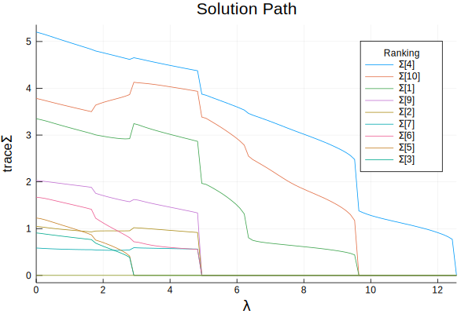

VCModel
Machine information
versioninfo()Julia Version 1.3.1
Commit 2d5741174c (2019-12-30 21:36 UTC)
Platform Info:
OS: macOS (x86_64-apple-darwin18.6.0)
CPU: Intel(R) Core(TM) i5-6267U CPU @ 2.90GHz
WORD_SIZE: 64
LIBM: libopenlibm
LLVM: libLLVM-6.0.1 (ORCJIT, skylake)Demo data
For demonstration, we generate a random data set. We use the following distribution to generate response $Y$ of size $100 \times 3$:
where $\otimes$ indicates Kronecker product and each $\Sigma_i$ indicates variance component for $i$-th group, $i=0,1,\ldots, 10.$ We set
Define $\Omega = \text{Var}(Y) = \Sigma_1 \otimes V_1 + \cdots + \Sigma_{10} \otimes V_{10} + \Sigma_0\otimes I_n.$ The covariate matrix $X$ is generated using standard normal distribution.
using LinearAlgebra, Random
## generate data from a d-variate response variance component model
Random.seed!(123)
n = 100 # no. observations
d = 3 # no. categories
m = 11 # no. variance components
p = 4 # no. covariates
X = randn(n, p) # n-by-p covariate matrix
β = ones(p, d) # p-by-d mean component regression coefficient
# a vector of d-by-d variance component parameters
Σ = [zeros(d, d) for i in 1:m]
for i in [1, 4, 10]
Σ[i] = 1.5 * Matrix{Float64}(I, d, d)
end
Σ[end] = Matrix{Float64}(I, d, d)
# a vector of covariance matrices
V = Array{Matrix{Float64}}(undef, m)
for i = 1:(m - 1)
Vi = randn(n, 50)
V[i] = Vi * Vi'
V[i] ./= norm(V[i])
end
V[end] = Matrix(I, n, n) ./ √n
# form overall nd-by-nd covariance matrix Ω
Ω = zeros(n*d, n*d)
for i = 1:m
Ω .+= kron(Σ[i], V[i])
end
Ωchol = cholesky!(Symmetric(Ω))
# n-by-d responses
Y = X * β + reshape(Ωchol.L * randn(n*d), n, d);True variance component parameter vector:
Σ11-element Array{Array{Float64,2},1}:
[1.5 0.0 0.0; 0.0 1.5 0.0; 0.0 0.0 1.5]
[0.0 0.0 0.0; 0.0 0.0 0.0; 0.0 0.0 0.0]
[0.0 0.0 0.0; 0.0 0.0 0.0; 0.0 0.0 0.0]
[1.5 0.0 0.0; 0.0 1.5 0.0; 0.0 0.0 1.5]
[0.0 0.0 0.0; 0.0 0.0 0.0; 0.0 0.0 0.0]
[0.0 0.0 0.0; 0.0 0.0 0.0; 0.0 0.0 0.0]
[0.0 0.0 0.0; 0.0 0.0 0.0; 0.0 0.0 0.0]
[0.0 0.0 0.0; 0.0 0.0 0.0; 0.0 0.0 0.0]
[0.0 0.0 0.0; 0.0 0.0 0.0; 0.0 0.0 0.0]
[1.5 0.0 0.0; 0.0 1.5 0.0; 0.0 0.0 1.5]
[1.0 0.0 0.0; 0.0 1.0 0.0; 0.0 0.0 1.0]Goal
Suppose we wish to select $\Sigma_i, i=1,\ldots, 10$ that are associated with response $Y.$ This can be achieved by VCSEL.jl package.
Variance component selection
First load the package.
using VCSELTo perform selection, take 2 steps:
Step 1 (Construct a model). Construct an instance of VCModel, which is the fundamental type for variance component model. It consists of fields
Y: $n$-by-$d$ responses.X: $n$-by-$p$ covariate matrix (if exists).V=(V[1],...,V[m],I): a vector of $n$-by-$n$ covariance matrices. The last covariance matrix must be positive definite and usually is a diagonal matrix. AllV[i]should have frobenius norm 1.Σ=(Σ[1],...,Σ[m]): a vector of initial estimates for $d$-by-$d$ variance component parameters. When $d=1$,Σis a $m$-by-$1$ vector. If not supplied, it is set to be a vector of $d$-by-$d$ identity matrix by default.
VCModel can be initialized by VCModel(Y, V) VCModel(Y, V, Σ) VCModel(Y, X, V) VCModel(Y, X, V, Σ) Let us construct a VCModel using Y, X, and V. Since we do not provide Σ, it is initialized to be a vector of identity matrices.
vcm = VCModel(Y, X, V);Since we did not set initial estimates of Σ, all elements are identity matrix.
vcm.Σ11-element Array{Array{Float64,2},1}:
[1.0 0.0 0.0; 0.0 1.0 0.0; 0.0 0.0 1.0]
[1.0 0.0 0.0; 0.0 1.0 0.0; 0.0 0.0 1.0]
[1.0 0.0 0.0; 0.0 1.0 0.0; 0.0 0.0 1.0]
[1.0 0.0 0.0; 0.0 1.0 0.0; 0.0 0.0 1.0]
[1.0 0.0 0.0; 0.0 1.0 0.0; 0.0 0.0 1.0]
[1.0 0.0 0.0; 0.0 1.0 0.0; 0.0 0.0 1.0]
[1.0 0.0 0.0; 0.0 1.0 0.0; 0.0 0.0 1.0]
[1.0 0.0 0.0; 0.0 1.0 0.0; 0.0 0.0 1.0]
[1.0 0.0 0.0; 0.0 1.0 0.0; 0.0 0.0 1.0]
[1.0 0.0 0.0; 0.0 1.0 0.0; 0.0 0.0 1.0]
[1.0 0.0 0.0; 0.0 1.0 0.0; 0.0 0.0 1.0]Step 2 (Optimize). Call optimization routine vcselect!.
Required input argument for executing vcselect! is VCModel:
vcm:VCModel.
Keyword Arguments are
penfun: penalty function. Default isNoPenalty(). Other options areL1Penalty()andMCPPenalty().λ: tuning parameter. Default is 1.0.penwt: penalty weights. Default is (1,...1,0).standardize: logical flag for covariance matrix standardization. Default isfalse. If true,V[i]is standardized by its Frobenius norm, and parameter estimates are returned on the original scale.maxiters: maximum number of iterations. Default is 1000.tol: convergence tolerance. Default is1e-5.verbose: display switch. Default is false.checktype: check argument type switch. Default is true.
<a id='no-penalty'></a>
No penalty
First, we call vcselect! without specifying any penalty function. By default, it is fit with no penalty (i.e. $\lambda=0$).
vcm_nopen = deepcopy(vcm);
vcm_nopen, final_obj, niters, = vcselect!(vcm_nopen);
## equivalent to
# vcselect!(vcm_nopen; penfun=NoPenalty());
# vcselect!(vcm_nopen; λ=0.0)(VCModel{Float64}([1.860094835353257 2.055403434516128 2.84544587051332; 3.4359556067573895 2.8421454064488842 2.860512418851407; … ; -0.21488508947517132 -0.3336880873733919 0.3849750333444425; -2.7580470886596755 -3.400050457633945 -4.784333938275772], [1.1902678809862768 0.3762642112434747 0.34658945360812454 0.45809880324835406; 2.04817970778924 -0.4052717901213415 1.604313725337457 0.13912437753868148; … ; -0.16371133936712523 0.5752786905523419 -0.17655459673142 -0.045725895200926625; -0.9029858060964956 -0.16600120902535137 -1.2792370363858774 -1.3123821810547711], Array{Float64,2}[[0.092494023125743 0.0030042568249118926 … -0.00922398515864249 0.013285729616217755; 0.0030042568249118926 0.04025705934773749 … 0.003708804177337504 0.003823593679063355; … ; -0.00922398515864249 0.003708804177337504 … 0.039439277698925315 0.001178066910649526; 0.013285729616217755 0.003823593679063355 … 0.001178066910649526 0.06886830969476362], [0.06030328209283304 -0.001024446424453263 … 0.002416656153804365 0.0063790347402901595; -0.001024446424453263 0.05853661106826809 … 0.0006337090856672788 0.007760397505232091; … ; 0.002416656153804365 0.0006337090856672788 … 0.07562956244880668 0.00030815255053525065; 0.0063790347402901595 0.007760397505232091 … 0.00030815255053525065 0.05701901985157344], [0.06322716304318081 -0.008711612549915216 … -0.0015279035339411636 0.022149776654320365; -0.008711612549915216 0.08061523894061923 … 0.009591847741341792 -0.003071120098660378; … ; -0.0015279035339411636 0.009591847741341792 … 0.05416995491912846 -0.0029020331844479843; 0.022149776654320365 -0.003071120098660378 … -0.0029020331844479843 0.05313609004607579], [0.06813121548362011 -0.0070291449197405756 … -0.0026551965249274802 -0.01674818135585094; -0.0070291449197405756 0.054198100753390724 … -0.0028780223522959485 0.0020700994740670414; … ; -0.0026551965249274802 -0.0028780223522959485 … 0.09097697256212886 -0.006540345065276699; -0.01674818135585094 0.0020700994740670414 … -0.006540345065276699 0.06960664355867946], [0.04668688768952539 0.0019236985688410111 … -0.0022665544476031733 -0.010434298910784219; 0.0019236985688410111 0.03392562063763582 … -0.0011424991420148395 -0.0046479249957258875; … ; -0.0022665544476031733 -0.0011424991420148395 … 0.05138535402954277 -0.008839324382598431; -0.010434298910784219 -0.0046479249957258875 … -0.008839324382598431 0.07577857511792184], [0.05231851595188485 0.014000335532918394 … 0.005403566739336403 0.014981202961522474; 0.014000335532918394 0.07607804340530455 … 0.011430157976046337 0.0075580432740531165; … ; 0.005403566739336403 0.011430157976046337 … 0.06158685437162115 -0.0028232842319230655; 0.014981202961522474 0.0075580432740531165 … -0.0028232842319230655 0.05042834747669137], [0.04594010668887232 -0.004714934455660974 … -0.006250982214183923 -0.00021509221778614137; -0.004714934455660974 0.06459426209080153 … 0.006069414224015679 -0.005275293063097298; … ; -0.006250982214183923 0.006069414224015679 … 0.04744617444239548 -0.0120998692083325; -0.00021509221778614137 -0.005275293063097298 … -0.0120998692083325 0.058420597856173144], [0.04285048722707893 -0.0012591896928231185 … 0.006999165863003292 0.012017387482265064; -0.0012591896928231185 0.059491880838477874 … 0.004144130951731809 -0.002486162307852439; … ; 0.006999165863003292 0.004144130951731809 … 0.07122862570553226 -0.003085003761206133; 0.012017387482265064 -0.002486162307852439 … -0.003085003761206133 0.0626023830368834], [0.07096485697673946 0.006867051452544812 … 0.0008340653532862 -0.001026824097285736; 0.006867051452544812 0.038155922687492905 … 0.01495473906894293 0.013816417177780163; … ; 0.0008340653532862 0.01495473906894293 … 0.05601150902491132 0.005010048728031925; -0.001026824097285736 0.013816417177780163 … 0.005010048728031925 0.07912963957940582], [0.0687847964302108 0.007885142255207716 … 0.009553757381870287 0.004674662347806306; 0.007885142255207716 0.04447261880398761 … -0.007746036979892709 0.007364544628645696; … ; 0.009553757381870287 -0.007746036979892709 … 0.06888556697976453 -0.0041497843619061; 0.004674662347806306 0.007364544628645696 … -0.0041497843619061 0.05679457041424945], [0.1 0.0 … 0.0 0.0; 0.0 0.1 … 0.0 0.0; … ; 0.0 0.0 … 0.1 0.0; 0.0 0.0 … 0.0 0.1]], [-0.7739062357131296 -0.9331658620345604 0.19340082517416746; -0.5375502154741546 0.5537854011527692 0.20893333641524464; … ; -0.4343391357754267 -0.5525835604901764 0.18231678530353623; 0.8184761551421919 0.4159096209243484 -1.0062331262125586], [-0.7739062357131296, -0.5375502154741546, -0.20934576787419104, -0.6194109267264994, 0.3150859712402592, -0.5744888057510927, -0.4854963959511227, -0.21783269698124924, 0.04557966075851045, 0.09260303155622232 … -0.6701201251276538, 0.45207803831996607, 0.2172832895324519, -0.6486962173686432, 0.914863044503496, -0.13625347835227242, 0.27086253928126225, -0.2651767713732077, 0.18231678530353623, -1.0062331262125586], Array{Float64,2}[[0.06241940326515145 0.00836808178072565 … -0.0030137457265758103 -0.001443435257734814; 0.008368081780725647 0.038635968199578145 … 0.003666575671928326 0.008448856049055877; … ; -0.0030137457265758095 0.003666575671928322 … 0.03967729699754013 0.001378766829808455; -0.0014434352577348147 0.008448856049055877 … 0.0013787668298084544 0.0703211596550126], [0.06660585725029884 -0.014685936193412531 … 0.007254765245388391 -0.0004418534194450657; -0.01468593619341254 0.047872391071702436 … -0.0054172329454174805 -0.006071187548481201; … ; 0.007254765245388388 -0.005417232945417477 … 0.07543814690331613 0.0047944599143733965; -0.0004418534194450634 -0.006071187548481201 … 0.004794459914373397 0.056071776854515], [0.08655990797450448 -0.019565799173411332 … -0.014297947276639663 0.007944592505932883; -0.01956579917341135 0.07515122068356131 … -0.0022898866984463724 -0.006927773965642289; … ; -0.014297947276639683 -0.002289886698446372 … 0.05559082524056128 -0.006128610891696554; 0.00794459250593288 -0.006927773965642292 … -0.006128610891696553 0.06345397760520183], [0.07693692121541147 -0.008593123943048885 … 0.009032480785038398 -0.015568892907706014; -0.008593123943048878 0.054124597646746965 … 0.0036505871452616415 0.00673509476082784; … ; 0.009032480785038394 0.003650587145261638 … 0.08923463245815301 -0.005672095032390929; -0.015568892907706014 0.0067350947608278335 … -0.00567209503239093 0.05862887040843395], [0.0560490317307929 0.011020795144204664 … -0.007949478862943551 -0.009257714844321491; 0.011020795144204681 0.0648728736259175 … -0.013464798197077268 0.0020818985821961992; … ; -0.007949478862943551 -0.01346479819707726 … 0.049326973965246296 -0.009263088922149193; -0.00925771484432149 0.0020818985821962 … -0.009263088922149195 0.07111614823298519], [0.05875682215895067 -0.0002824331753445289 … 0.004814639991158207 -0.009719904042422954; -0.00028243317534452797 0.05904965894971886 … -0.007411700262533293 0.0030982013374564283; … ; 0.004814639991158213 -0.0074117002625333 … 0.0634185744725271 0.0008653317260022915; -0.009719904042422955 0.003098201337456423 … 0.0008653317260022916 0.06035303149234789], [0.09899317365897248 0.013628458771606613 … -0.0060653796908782965 -0.006728345989607653; 0.013628458771606608 0.042735710079710366 … 0.007233960426281893 -0.011637051367206747; … ; -0.0060653796908783 0.00723396042628189 … 0.04879051554917664 -0.011658901228511298; -0.006728345989607648 -0.011637051367206743 … -0.011658901228511298 0.05652715310049563], [0.056514419808843225 0.01686210097175352 … -0.0006838051423139431 0.0034901185682680363; 0.016862100971753537 0.0495023971917447 … 0.0023572017649846995 0.0016872591373905098; … ; -0.0006838051423139423 0.0023572017649847 … 0.07237326648576908 -0.0025907837823756024; 0.0034901185682680367 0.0016872591373905098 … -0.002590783782375603 0.06755464109915836], [0.04714022523257112 0.0034782818633012904 … 0.004090741015128036 0.01185450708755583; 0.0034782818633012896 0.0466599268812482 … 0.004178907656791244 0.006157418318466628; … ; 0.004090741015128045 0.00417890765679124 … 0.058353799386306 0.00398853453579273; 0.011854507087555822 0.006157418318466626 … 0.0039885345357927315 0.07937662102800903], [0.05524857538434973 0.0008429930933155406 … 0.009664865577212562 -0.011038512061464417; 0.0008429930933155428 0.04490901736500925 … 0.004545720039030089 -0.0010412022557864387; … ; 0.009664865577212543 0.004545720039030089 … 0.0676821507105378 -0.000965421160808708; -0.011038512061464412 -0.0010412022557864397 … -0.0009654211608087073 0.06050900327037573], [1.0 0.0 … 0.0 0.0; 0.0 1.0 … 0.0 0.0; … ; 0.0 0.0 … 1.0 0.0; 0.0 0.0 … 0.0 1.0]], [0.98262373057086 0.9938855069481529 1.0279389406903463; 0.9781630466475704 1.0232304476367446 0.9711430902302547; 0.925410633551665 1.0145769598392573 0.8988391195993317; 0.8685338679504442 1.1075976421283704 1.0209845293559523], Array{Float64,2}[[1.040392519682894 -0.9331650013274756 0.2698792614971673; -0.9331650013274755 1.8323672344949145 0.5027515826645772; 0.2698792614971673 0.5027515826645772 0.6285554861339957], [1.022164010367449 -0.40348987265201536 -0.32127925630485177; -0.40348987265201547 0.15944226901597186 0.12680764831035088; -0.3212792563048518 0.12680764831035088 0.10098342437882002], [0.04652475933325329 -0.15955065387098033 -0.09119883427438784; -0.15955065387098036 0.558496540875567 0.31799201475835637; -0.09119883427438785 0.31799201475835637 0.18118920760059967], [0.3345667575960278 0.8714891952837133 -0.4085346910999654; 0.8714891952837132 2.283405973643672 -1.2403652975256347; -0.4085346910999654 -1.240365297525635 2.8288133260307773], [0.9234821871351467 -0.497494817604588 -0.02358520286780985; -0.4974948176045879 0.26800851998962266 0.012705734095699441; -0.02358520286780985 0.012705734095699441 0.0006023662559145914], [0.5212700918589973 -0.3487119661493774 0.2065217351077744; -0.3487119661493774 0.8619411813355193 0.2777147022780176; 0.20652173510777444 0.27771470227801753 0.35698431616276477], [0.33030923192851197 0.22713027189037435 -0.29044157849611035; 0.22713027189037435 0.1561814210895782 -0.1997161083473995; -0.29044157849611035 -0.19971610834739953 0.2553858951287951], [3.419782142743309e-6 6.002093929935393e-7 -1.9457790107734202e-6; 6.002093929935392e-7 1.053433698531686e-7 -3.415055568032594e-7; -1.945779010773421e-6 -3.415055568032595e-7 1.1071046984866846e-6], [0.7851702204334691 -0.7140482003169591 -0.3017915695539358; -0.7140482003169593 0.6638398237187997 0.3558976732958973; -0.3017915695539358 0.3558976732958973 0.5743516343478428], [1.1501682161353104 1.5018053897265098 -0.176709466164187; 1.5018053897265093 2.145159095282665 -0.4819296518748778; -0.17670946616418703 -0.4819296518748778 0.5482146165881027], [0.006411213649655886 -0.007445486023000897 0.0032555988762958134; -0.007445486023000895 0.008691059081563203 -0.0038087041845123707; 0.0032555988762958126 -0.0038087041845123702 0.0016707029386655427]], [1.0, 1.0, 1.0, 1.0, 1.0, 1.0, 1.0, 1.0, 1.0, 1.0, 1.0], [0.3848469845567399 0.008141961190454624 … -0.005529245406561242 0.003926477923160772; 0.008141961190454631 0.3102407474880889 … -0.003931164722746072 0.004407360260288251; … ; -0.005529245406561234 -0.003931164722746074 … 0.40247824636719653 -0.016717572104818487; 0.003926477923160771 0.004407360260288252 … -0.016717572104818494 0.34366732756355295], [0.6203603666875729 0.0 … 0.0 0.0; 0.013124566989875248 0.556837941621633 … 0.0 0.0; … ; -0.008912957215633814 -0.006849723651344332 … 0.4056515458484372 0.0; 0.006329350058460831 0.007765796757401873 … 0.02180873377720742 0.41010803337524115], [4.845482863860569 -0.3775566261089849 … 0.2891952023622961 -0.18855175504814856; -0.3775566261089849 6.070160173131242 … 0.21055833488380835 -0.6744981262187408; … ; 0.2891952023622961 0.21055833488380835 … 6.094248208275274 -0.31965445582375296; -0.18855175504814856 -0.6744981262187408 … -0.31965445582375296 5.945706223337202], [-4.580605904115147, 1.779020570112972, 0.6083840301175939, -1.7203570410064837, 0.4491502822379354, -3.862735500892266, -1.5463630481224813, -1.2710195640978095, -0.2103826829527149, 0.8544153865463257 … -2.6487706440503493, 0.7703599984465104, 0.6354738069645389, -3.391724808332392, 3.4336816117618016, -1.1096566132646022, 1.7388650455128654, 1.586013076250488, -1.695383318542189, -2.1286884665345625], [-4.580605904115147 -4.011610932575097 -0.9165493273250832; 1.779020570112972 4.593548341736832 -2.864638955840119; … ; -1.312354692402212 0.5312239990161676 -1.695383318542189; 1.2440718403200206 -0.29911004206217506 -2.1286884665345625], Array{Float64,2}[[0.06241940326515145 0.00836808178072565 … -0.0030137457265758103 -0.001443435257734814; 0.008368081780725647 0.038635968199578145 … 0.003666575671928326 0.008448856049055877; … ; -0.0030137457265758095 0.003666575671928322 … 0.03967729699754013 0.001378766829808455; -0.0014434352577348147 0.008448856049055877 … 0.0013787668298084544 0.0703211596550126], [0.06660585725029884 -0.014685936193412531 … 0.007254765245388391 -0.0004418534194450657; -0.01468593619341254 0.047872391071702436 … -0.0054172329454174805 -0.006071187548481201; … ; 0.007254765245388388 -0.005417232945417477 … 0.07543814690331613 0.0047944599143733965; -0.0004418534194450634 -0.006071187548481201 … 0.004794459914373397 0.056071776854515], [0.08655990797450448 -0.019565799173411332 … -0.014297947276639663 0.007944592505932883; -0.01956579917341135 0.07515122068356131 … -0.0022898866984463724 -0.006927773965642289; … ; -0.014297947276639683 -0.002289886698446372 … 0.05559082524056128 -0.006128610891696554; 0.00794459250593288 -0.006927773965642292 … -0.006128610891696553 0.06345397760520183], [0.07693692121541147 -0.008593123943048885 … 0.009032480785038398 -0.015568892907706014; -0.008593123943048878 0.054124597646746965 … 0.0036505871452616415 0.00673509476082784; … ; 0.009032480785038394 0.003650587145261638 … 0.08923463245815301 -0.005672095032390929; -0.015568892907706014 0.0067350947608278335 … -0.00567209503239093 0.05862887040843395], [0.0560490317307929 0.011020795144204664 … -0.007949478862943551 -0.009257714844321491; 0.011020795144204681 0.0648728736259175 … -0.013464798197077268 0.0020818985821961992; … ; -0.007949478862943551 -0.01346479819707726 … 0.049326973965246296 -0.009263088922149193; -0.00925771484432149 0.0020818985821962 … -0.009263088922149195 0.07111614823298519], [0.05875682215895067 -0.0002824331753445289 … 0.004814639991158207 -0.009719904042422954; -0.00028243317534452797 0.05904965894971886 … -0.007411700262533293 0.0030982013374564283; … ; 0.004814639991158213 -0.0074117002625333 … 0.0634185744725271 0.0008653317260022915; -0.009719904042422955 0.003098201337456423 … 0.0008653317260022916 0.06035303149234789], [0.09899317365897248 0.013628458771606613 … -0.0060653796908782965 -0.006728345989607653; 0.013628458771606608 0.042735710079710366 … 0.007233960426281893 -0.011637051367206747; … ; -0.0060653796908783 0.00723396042628189 … 0.04879051554917664 -0.011658901228511298; -0.006728345989607648 -0.011637051367206743 … -0.011658901228511298 0.05652715310049563], [0.056514419808843225 0.01686210097175352 … -0.0006838051423139431 0.0034901185682680363; 0.016862100971753537 0.0495023971917447 … 0.0023572017649846995 0.0016872591373905098; … ; -0.0006838051423139423 0.0023572017649847 … 0.07237326648576908 -0.0025907837823756024; 0.0034901185682680367 0.0016872591373905098 … -0.002590783782375603 0.06755464109915836], [0.04714022523257112 0.0034782818633012904 … 0.004090741015128036 0.01185450708755583; 0.0034782818633012896 0.0466599268812482 … 0.004178907656791244 0.006157418318466628; … ; 0.004090741015128045 0.00417890765679124 … 0.058353799386306 0.00398853453579273; 0.011854507087555822 0.006157418318466626 … 0.0039885345357927315 0.07937662102800903], [0.05524857538434973 0.0008429930933155406 … 0.009664865577212562 -0.011038512061464417; 0.0008429930933155428 0.04490901736500925 … 0.004545720039030089 -0.0010412022557864387; … ; 0.009664865577212543 0.004545720039030089 … 0.0676821507105378 -0.000965421160808708; -0.011038512061464412 -0.0010412022557864397 … -0.0009654211608087073 0.06050900327037573], [1.0 0.0 … 0.0 0.0; 0.0 1.0 … 0.0 0.0; … ; 0.0 0.0 … 1.0 0.0; 0.0 0.0 … 0.0 1.0]], [22.65238240259132 0.0 0.0; 5.44246187975408 19.66269210939686 0.0; 0.982029735412937 -4.236453466497337 25.53900914281947], [0.04414546700772652 0.0 0.0; -0.012219080684209665 0.05085773577882028 0.0; -0.0037244094896317515 0.008436366103066546 0.03915578691435487], [4.845346353979097 -0.0 … 0.0 -0.0; -0.0 6.069931014098225 … 0.0 -0.0; … ; 0.0 0.0 … 6.094037359307323 -0.0; -0.0 -0.0 … -0.0 5.945525218247111], [0.00018313684140736086 0.0002370090926309132 -0.3040692016166241; -18.644320281880933 40.31687534372334 17.410059430845852; 9.69165402535091 -14.463125929012858 7.518253159868553], [-0.04268161146395569 0.05868066603644307 -0.029751268011123176; -0.5395838378275681 0.8095362203763004 -0.42145996789211465; … ; -0.300993237741671 0.44890369610862413 -0.23330853970660945; 0.05542054139771081 -0.08084670178978905 0.04174703191105588], [0.4046418778695242 0.02129954133107345 … -0.0009967114922605036 0.00924458784064161; 0.02129954133107345 0.29767485575707203 … -0.0014213739070171934 -0.004295342205860746; … ; -0.0009967114922605036 -0.0014213739070171923 … 0.4038340933390354 -0.021756408464620357; 0.00924458784064161 -0.004295342205860747 … -0.021756408464620357 0.3652959800244595]), 224.08353228995801, 276, Float64[])The output of vcselect! contains
- fitted model
vcm_nopen;Parameter estimates can be accessed as below:
# variance components
vcm_nopen.Σ 11-element Array{Array{Float64,2},1}:
[1.040392519682894 -0.9331650013274756 0.2698792614971673; -0.9331650013274755 1.8323672344949145 0.5027515826645772; 0.2698792614971673 0.5027515826645772 0.6285554861339957]
[1.022164010367449 -0.40348987265201536 -0.32127925630485177; -0.40348987265201547 0.15944226901597186 0.12680764831035088; -0.3212792563048518 0.12680764831035088 0.10098342437882002]
[0.04652475933325329 -0.15955065387098033 -0.09119883427438784; -0.15955065387098036 0.558496540875567 0.31799201475835637; -0.09119883427438785 0.31799201475835637 0.18118920760059967]
[0.3345667575960278 0.8714891952837133 -0.4085346910999654; 0.8714891952837132 2.283405973643672 -1.2403652975256347; -0.4085346910999654 -1.240365297525635 2.8288133260307773]
[0.9234821871351467 -0.497494817604588 -0.02358520286780985; -0.4974948176045879 0.26800851998962266 0.012705734095699441; -0.02358520286780985 0.012705734095699441 0.0006023662559145914]
[0.5212700918589973 -0.3487119661493774 0.2065217351077744; -0.3487119661493774 0.8619411813355193 0.2777147022780176; 0.20652173510777444 0.27771470227801753 0.35698431616276477]
[0.33030923192851197 0.22713027189037435 -0.29044157849611035; 0.22713027189037435 0.1561814210895782 -0.1997161083473995; -0.29044157849611035 -0.19971610834739953 0.2553858951287951]
[3.419782142743309e-6 6.002093929935393e-7 -1.9457790107734202e-6; 6.002093929935392e-7 1.053433698531686e-7 -3.415055568032594e-7; -1.945779010773421e-6 -3.415055568032595e-7 1.1071046984866846e-6]
[0.7851702204334691 -0.7140482003169591 -0.3017915695539358; -0.7140482003169593 0.6638398237187997 0.3558976732958973; -0.3017915695539358 0.3558976732958973 0.5743516343478428]
[1.1501682161353104 1.5018053897265098 -0.176709466164187; 1.5018053897265093 2.145159095282665 -0.4819296518748778; -0.17670946616418703 -0.4819296518748778 0.5482146165881027]
[0.006411213649655886 -0.007445486023000897 0.0032555988762958134; -0.007445486023000895 0.008691059081563203 -0.0038087041845123707; 0.0032555988762958126 -0.0038087041845123702 0.0016707029386655427]# mean regression coefficients
vcm_nopen.β 4×3 Array{Float64,2}:
0.982624 0.993886 1.02794
0.978163 1.02323 0.971143
0.925411 1.01458 0.898839
0.868534 1.1076 1.02098# estimated nd-by-nd overall covariance matrix
vcm_nopen.Ωest 300×300 Array{Float64,2}:
0.404642 0.0212995 -0.0439677 … -0.000996711 0.00924459
0.0212995 0.297675 -0.0225235 -0.00142137 -0.00429534
-0.0439677 -0.0225235 0.355902 0.00217228 0.0148259
0.0141434 0.0137725 -0.00278179 0.00270504 0.00310854
0.00204811 -0.028574 0.00272162 -0.00533976 -0.000170068
0.00778168 -0.0246549 0.0214009 … -0.00351548 0.00481182
0.0214074 0.00720804 -0.0188076 0.00458159 0.00200145
0.0212846 -0.0168359 0.0235598 -0.00940152 -0.00161028
0.00027726 -0.00359327 0.0120295 0.0124774 -0.00456738
0.0333097 0.00505554 -0.00798919 -0.00368395 0.00712723
0.0337032 0.0174631 0.0144735 … -0.00782776 0.00526143
0.00168991 0.0105267 -0.0387361 0.000699345 -0.0126745
0.0497327 -0.000448481 0.00476156 -0.00570844 0.00561756
⋮ ⋱
-0.00359702 0.00150652 0.00651356 0.0234858 0.00137043
-0.00761681 -0.00736318 -0.00279967 -0.0297263 0.00250212
-0.00520933 0.0135742 0.00147882 … -0.0503342 -0.0258913
-0.00712035 0.0146343 -0.00587661 -0.0074037 -0.0101847
4.87859e-5 -0.011713 0.00247226 -0.0161755 -0.0121719
-0.000212575 -0.00372149 0.000234091 -0.0273435 -0.0144336
-0.00261881 -0.00187509 0.00823666 0.0190836 0.0176459
-0.0168559 0.0124464 0.00468057 … 0.0388293 -0.0217836
-0.0128125 -0.00522231 0.00236304 0.0355992 -0.0185136
0.00686613 -0.000792507 -0.0174963 -0.00963686 -0.0101977
-0.000996711 -0.00142137 0.00217228 0.403834 -0.0217564
0.00924459 -0.00429534 0.0148259 -0.0217564 0.365296- final objective value
final_obj224.08353228995801- number of iterations to convergence
niters276Selection at specific regularization parameter
Now we specify penalty function penfun=L1Penalty() and regularization parameter value λ=2.0.
vcm_L1 = deepcopy(vcm)
vcm_L1, obj_L1, niters_L1, = vcselect!(vcm_L1; penfun=L1Penalty(), λ=2.0);vcm_L1.Σ11-element Array{Array{Float64,2},1}:
[0.723344411461242 -0.5371552915924754 0.2653186252185347; -0.5371552915924754 1.4582908604350255 0.5524782606904559; 0.2653186252185347 0.5524782606904559 0.6325518383029696]
[0.0 0.0 0.0; 0.0 0.0 0.0; 0.0 0.0 0.0]
[0.057805236800426145 -0.17358417446955493 -0.10897979851692789; -0.17358417446955496 0.5212600756188006 0.32725770158442874; -0.1089797985169279 0.32725770158442874 0.20545912804073208]
[0.2913469143855766 0.7770359938857069 -0.4247453010516808; 0.7770359938857069 2.0730922239946166 -1.1687134116436118; -0.42474530105168085 -1.168713411643612 2.474665577830677]
[0.0 0.0 0.0; 0.0 0.0 0.0; 0.0 0.0 0.0]
[0.0 0.0 0.0; 0.0 0.0 0.0; 0.0 0.0 0.0]
[0.0 0.0 0.0; 0.0 0.0 0.0; 0.0 0.0 0.0]
[0.0 0.0 0.0; 0.0 0.0 0.0; 0.0 0.0 0.0]
[0.06642785873460767 -0.0838719932120693 -0.14527412016886251; -0.0838719932120693 0.11376962987090039 0.22138651825918587; -0.14527412016886251 0.22138651825918582 0.5007706483133327]
[1.2155752663079227 0.7538241005012988 -0.17876565086814275; 0.7538241005012989 2.129358393362267 -0.13275367534940646; -0.17876565086814278 -0.1327536753494065 0.579030827031327]
[0.182702105774506 -0.07290881165278217 -0.017726528851982094; -0.07290881165278217 0.111382106709641 -0.006119116547148225; -0.017726528851982098 -0.006119116547148225 0.032420377042649794]vcm_L1.β4×3 Array{Float64,2}:
1.03872 0.939329 0.975904
0.993807 0.997929 0.969196
0.951591 1.03716 0.887175
0.910584 1.05514 1.07108obj_L1246.1242780263884niters_L1135Obtain solution path
vcselectpath! function to compute regularization path for a given penalty at a grid of the regularization parameter lambda values. vcselectpath! provides options for users to customize. Keyword arguments for the function are
penfun: penalty function (e.g.NoPenalty(),L1Penalty(),MCPPenalty()). Default isNoPenalty().penwt: weights for penalty term. Default is (1,1,...1,0).nλ: number ofλvalues in the sequence. Default is 100.λpath: user-provided sequence ofλvalues in ascending order. Typically the program computes its ownλsequence based onnλ, but supplyingλpathoverrides this.maxiter: maximum number of iteration for MM loop. Default is 1000.standardize: logical flag for covariance matrix standardization. Default isfalse. If true,V[i]is standardized by its Frobenius norm.tol: convergence tolerance. Default is1e-6.
When called without any penalty, vcselectpath! returns the same output as vcselect! with penfun=NoPenalty() (compare the output).
vcmpath_np = deepcopy(vcm)
Σ̂path_np, β̂path_np, λpath_np, objpath_np, niterspath_np = vcselectpath!(vcmpath_np)(Array{Float64,2}[[1.040392519682894 -0.9331650013274756 0.2698792614971673; -0.9331650013274755 1.8323672344949145 0.5027515826645772; 0.2698792614971673 0.5027515826645772 0.6285554861339957], [1.022164010367449 -0.40348987265201536 -0.32127925630485177; -0.40348987265201547 0.15944226901597186 0.12680764831035088; -0.3212792563048518 0.12680764831035088 0.10098342437882002], [0.04652475933325329 -0.15955065387098033 -0.09119883427438784; -0.15955065387098036 0.558496540875567 0.31799201475835637; -0.09119883427438785 0.31799201475835637 0.18118920760059967], [0.3345667575960278 0.8714891952837133 -0.4085346910999654; 0.8714891952837132 2.283405973643672 -1.2403652975256347; -0.4085346910999654 -1.240365297525635 2.8288133260307773], [0.9234821871351467 -0.497494817604588 -0.02358520286780985; -0.4974948176045879 0.26800851998962266 0.012705734095699441; -0.02358520286780985 0.012705734095699441 0.0006023662559145914], [0.5212700918589973 -0.3487119661493774 0.2065217351077744; -0.3487119661493774 0.8619411813355193 0.2777147022780176; 0.20652173510777444 0.27771470227801753 0.35698431616276477], [0.33030923192851197 0.22713027189037435 -0.29044157849611035; 0.22713027189037435 0.1561814210895782 -0.1997161083473995; -0.29044157849611035 -0.19971610834739953 0.2553858951287951], [3.419782142743309e-6 6.002093929935393e-7 -1.9457790107734202e-6; 6.002093929935392e-7 1.053433698531686e-7 -3.415055568032594e-7; -1.945779010773421e-6 -3.415055568032595e-7 1.1071046984866846e-6], [0.7851702204334691 -0.7140482003169591 -0.3017915695539358; -0.7140482003169593 0.6638398237187997 0.3558976732958973; -0.3017915695539358 0.3558976732958973 0.5743516343478428], [1.1501682161353104 1.5018053897265098 -0.176709466164187; 1.5018053897265093 2.145159095282665 -0.4819296518748778; -0.17670946616418703 -0.4819296518748778 0.5482146165881027], [0.006411213649655886 -0.007445486023000897 0.0032555988762958134; -0.007445486023000895 0.008691059081563203 -0.0038087041845123707; 0.0032555988762958126 -0.0038087041845123702 0.0016707029386655427]], [0.98262373057086 0.9938855069481529 1.0279389406903463; 0.9781630466475704 1.0232304476367446 0.9711430902302547; 0.925410633551665 1.0145769598392573 0.8988391195993317; 0.8685338679504442 1.1075976421283704 1.0209845293559523], [0.0], 224.08353228995801, 276)Σ̂path_np11-element Array{Array{Float64,2},1}:
[1.040392519682894 -0.9331650013274756 0.2698792614971673; -0.9331650013274755 1.8323672344949145 0.5027515826645772; 0.2698792614971673 0.5027515826645772 0.6285554861339957]
[1.022164010367449 -0.40348987265201536 -0.32127925630485177; -0.40348987265201547 0.15944226901597186 0.12680764831035088; -0.3212792563048518 0.12680764831035088 0.10098342437882002]
[0.04652475933325329 -0.15955065387098033 -0.09119883427438784; -0.15955065387098036 0.558496540875567 0.31799201475835637; -0.09119883427438785 0.31799201475835637 0.18118920760059967]
[0.3345667575960278 0.8714891952837133 -0.4085346910999654; 0.8714891952837132 2.283405973643672 -1.2403652975256347; -0.4085346910999654 -1.240365297525635 2.8288133260307773]
[0.9234821871351467 -0.497494817604588 -0.02358520286780985; -0.4974948176045879 0.26800851998962266 0.012705734095699441; -0.02358520286780985 0.012705734095699441 0.0006023662559145914]
[0.5212700918589973 -0.3487119661493774 0.2065217351077744; -0.3487119661493774 0.8619411813355193 0.2777147022780176; 0.20652173510777444 0.27771470227801753 0.35698431616276477]
[0.33030923192851197 0.22713027189037435 -0.29044157849611035; 0.22713027189037435 0.1561814210895782 -0.1997161083473995; -0.29044157849611035 -0.19971610834739953 0.2553858951287951]
[3.419782142743309e-6 6.002093929935393e-7 -1.9457790107734202e-6; 6.002093929935392e-7 1.053433698531686e-7 -3.415055568032594e-7; -1.945779010773421e-6 -3.415055568032595e-7 1.1071046984866846e-6]
[0.7851702204334691 -0.7140482003169591 -0.3017915695539358; -0.7140482003169593 0.6638398237187997 0.3558976732958973; -0.3017915695539358 0.3558976732958973 0.5743516343478428]
[1.1501682161353104 1.5018053897265098 -0.176709466164187; 1.5018053897265093 2.145159095282665 -0.4819296518748778; -0.17670946616418703 -0.4819296518748778 0.5482146165881027]
[0.006411213649655886 -0.007445486023000897 0.0032555988762958134; -0.007445486023000895 0.008691059081563203 -0.0038087041845123707; 0.0032555988762958126 -0.0038087041845123702 0.0016707029386655427]β̂path_np4×3 Array{Float64,2}:
0.982624 0.993886 1.02794
0.978163 1.02323 0.971143
0.925411 1.01458 0.898839
0.868534 1.1076 1.02098Now let us call vcselectpath! with penfun=L1Penalty(). Since we do not provide nλ or λpath, a grid of 100 $λ$ values is generated internally.
vcm_path = deepcopy(vcm)
Σ̂path, β̂path, λpath, objpath, niterspath = vcselectpath!(vcm_path;
penfun=L1Penalty());Output of vcselectpath! include
- variance component parameters path: $(i,j)$-th element corresponds to $i$-th variance component matrix at
λpath[j], $i=1,\ldots, 10, \; j=1,\ldots, 100$. The last row is for the residual variance component $\Sigma_0.$
Σ̂path11×100 Array{Array{Float64,2},2}:
[0.964484 -0.878534 0.291246; -0.878534 1.87357 0.409527; 0.291246 0.409527 0.512356] … [0.0 0.0 0.0; 0.0 0.0 0.0; 0.0 0.0 0.0]
[0.88697 -0.168999 -0.324029; -0.168999 0.0419948 0.0591281; -0.324029 0.0591281 0.11907] [0.0 0.0 0.0; 0.0 0.0 0.0; 0.0 0.0 0.0]
[0.0319492 -0.13754 -0.0880763; -0.13754 0.62292 0.396603; -0.0880763 0.396603 0.252673] [0.0 0.0 0.0; 0.0 0.0 0.0; 0.0 0.0 0.0]
[0.428464 0.897827 -0.297535; 0.897827 2.06265 -1.2974; -0.297535 -1.2974 2.71189] [2.46063e-16 1.17441e-15 -2.61995e-15; 1.17441e-15 5.6052e-15 -1.25045e-14; -2.61995e-15 -1.25045e-14 2.78959e-14]
[0.856367 -0.562249 -0.033135; -0.562249 0.369145 0.0217548; -0.033135 0.0217548 0.00128208] [0.0 0.0 0.0; 0.0 0.0 0.0; 0.0 0.0 0.0]
[0.453486 -0.451398 0.0629725; -0.451398 0.87901 0.314005; 0.0629725 0.314005 0.33909] … [0.0 0.0 0.0; 0.0 0.0 0.0; 0.0 0.0 0.0]
[0.339107 0.148511 -0.247879; 0.148511 0.0650403 -0.108558; -0.247879 -0.108558 0.181193] [0.0 0.0 0.0; 0.0 0.0 0.0; 0.0 0.0 0.0]
[5.27456e-6 1.29991e-6 -2.92758e-6; 1.29991e-6 3.20361e-7 -7.21499e-7; -2.92758e-6 -7.21499e-7 1.62492e-6] [0.0 0.0 0.0; 0.0 0.0 0.0; 0.0 0.0 0.0]
[0.797038 -0.658322 -0.322121; -0.658322 0.568001 0.380002; -0.322121 0.380002 0.665504] [0.0 0.0 0.0; 0.0 0.0 0.0; 0.0 0.0 0.0]
[1.08826 1.38038 -0.0680152; 1.38038 2.21767 -0.54062; -0.0680152 -0.54062 0.478122] [0.0 0.0 0.0; 0.0 0.0 0.0; 0.0 0.0 0.0]
[0.0702947 -0.0755383 0.0347578; -0.0755383 0.0811913 -0.0373599; 0.0347578 -0.0373599 0.0171911] … [3.33218 -0.315165 -0.464628; -0.315165 5.31693 0.035669; -0.464628 0.035669 3.23267]Let's take a trace of each matrix:
tr.(Σ̂path)11×100 Array{Float64,2}:
3.35041 3.33039 3.30816 … 0.0 0.0 0.0
1.04804 1.03808 1.02683 0.0 0.0 0.0
0.907542 0.898144 0.885295 0.0 0.0 0.0
5.203 5.17787 5.15092 0.825608 0.771447 3.37472e-14
1.22679 1.21322 1.19014 0.0 0.0 0.0
1.67159 1.66089 1.64623 … 0.0 0.0 0.0
0.585341 0.580511 0.57497 0.0 0.0 0.0
7.21984e-6 5.01809e-11 0.0 0.0 0.0 0.0
2.03054 2.01968 2.00984 0.0 0.0 0.0
3.78405 3.7625 3.7398 0.0 0.0 0.0
0.168677 0.172197 0.185863 … 10.6502 10.7018 11.8818- mean regression coefficient path: $j$-th element in
β̂pathcorresponds to $p$-by-$d$ coefficients atλpath[j].
β̂path100-element Array{Array{Float64,2},1}:
[0.970056800145968 0.9851818306585971 1.0277546485318616; 0.9908578041843322 1.0061729340146155 0.9659683457092927; 0.9303366182743511 1.012214164262387 0.8975771117837166; 0.8847476898983968 1.099588226998865 1.0228019849814547]
[0.9700547931669993 0.9851779231715498 1.0277510875539613; 0.9908802640938679 1.0061577572436342 0.9658958974324092; 0.9303930452096053 1.0121340331688236 0.8975326423167677; 0.8849021700106763 1.0994636400779647 1.0228591571458627]
[0.9700216041732665 0.9852773221641971 1.0276975105242259; 0.9908827323213368 1.0062150636206364 0.9657504293012046; 0.930394337310919 1.0120439159067223 0.8974129497586784; 0.8853887862472509 1.0992277983182828 1.022970924868811]
[0.9700017757626326 0.9854217116375406 1.0276096831691022; 0.9909047780954122 1.0063277583222079 0.9655654879681046; 0.9303376378895787 1.0120129019383362 0.8972854011254249; 0.8860082791378023 1.0989637058316624 1.0230784657302048]
[0.9700026714875383 0.9855768277691198 1.0275064563345253; 0.9909338661127843 1.0064886197357088 0.9653616812796909; 0.9302476537284565 1.0120120799104022 0.8971505760036749; 0.8866755408606781 1.098707093301289 1.0231731592976794]
[0.9700240363399607 0.9857146649221155 1.0274040394346802; 0.9909608821507079 1.0066785547337287 0.9651604824904629; 0.9301478683330154 1.0120156015965227 0.8970128900599386; 0.8873142398601757 1.098484911990389 1.02325077916745]
[0.970060098868174 0.9858441479176439 1.0273017079137612; 0.9909878301514629 1.006894598395578 0.9649573116010493; 0.930038683482266 1.0120189356569202 0.8968683534622994; 0.8879483589393866 1.098285458493899 1.0233152199984756]
[0.9701081308813002 0.9859542440291951 1.027205842057627; 0.9910149662228955 1.0071168820271392 0.9647628993089208; 0.9299318825402689 1.012016623635911 0.8967251292428947; 0.8885425749947786 1.0981124372248665 1.0233654434108503]
[0.9701668759004295 0.9860655088660634 1.0271075638073328; 0.9910475723116167 1.007360208634844 0.9645605712400513; 0.9298141868018878 1.01201433788962 0.8965736187204383; 0.8891610721208365 1.0979462131087079 1.0234050039241656]
[0.9702371099886957 0.9861733608439256 1.0270087241613148; 0.9910886799265735 1.0076149747736387 0.9643536567363287; 0.929689988328826 1.0120135409237598 0.8964194416706712; 0.8897907958146413 1.0977872644460216 1.0234324728192459]
[0.9703205212202832 0.9862733266997803 1.026909303639684; 0.9911377979236425 1.007876014812667 0.964144885932421; 0.9295617111063851 1.01201466880563 0.8962653271741763; 0.8904237441585969 1.0976354889160724 1.0234482136204597]
[0.9704203097195049 0.9863608672002531 1.026807600581066; 0.9911927713718501 1.008141186389551 0.9639363475030869; 0.9294300395879176 1.012019240400032 0.8961129157428468; 0.8910550738118972 1.0974905633314238 1.0234535974005405]
[0.9705525624790936 0.9864412460855143 1.0266901028995004; 0.991254315984135 1.0084342469240672 0.9637135368151316; 0.9292794511045213 1.012038253652813 0.8959548758415617; 0.8917352664999736 1.097344259492438 1.023449077834584]
⋮
[1.0270086224007002 0.977198763278347 1.0048747729603686; 1.032391225774656 1.0065628046188708 0.9678648933289815; 0.9215950703744944 1.022566456718345 0.9071331446315464; 0.9303860148451067 1.1262342100944394 1.0136172738294262]
[1.0269889487810646 0.9770984833813561 1.0051079714316673; 1.0324046493051526 1.0066244419131172 0.9677310020111419; 0.9215690006475311 1.022450221852565 0.9073802725346131; 0.9303705170319064 1.1261608849600842 1.0137798968645877]
[1.0269682733475587 0.9769954999531404 1.005344111774604; 1.032417852100495 1.0066858098188378 0.9675965459706555; 0.921543716585951 1.0223350882660023 0.9076288810464547; 0.9303550185026275 1.1260873518605627 1.0139432878587835]
[1.026946509169104 0.9768888265287958 1.0055862448748671; 1.0324310634871114 1.006747790618284 0.9674598724010764; 0.9215186845469215 1.0222192289169363 0.907881975827697; 0.9303393109359849 1.1260126705051663 1.0141094643897697]
[1.0269236032721383 0.9767777486889849 1.0058366500620735; 1.032444454361816 1.006811027038899 0.9673198046563743; 0.9214934988692552 1.0221012927356063 0.9081417010884496; 0.9303232436355087 1.1259361662624003 1.0142798649288771]
[1.026896845159577 0.9766488717195425 1.0061258907515698; 1.0324596640923442 1.006883169184882 0.967159535342927; 0.9214650282245407 1.0219669219675172 0.9084392137988487; 0.9303048760613988 1.1258486233100542 1.0144749805947635]
[1.0268669157612584 0.976505351156532 1.0064470672357912; 1.0324762859890984 1.00696224107712 0.966983524690152; 0.921434002637536 1.0218197196014545 0.908766299891925; 0.9302847134524947 1.125752461759609 1.014689399014444]
[1.026834011840215 0.9763479736484885 1.0067986516892178; 1.032494207742169 1.0070476483198068 0.9667931852870184; 0.921400598852995 1.0216607252027052 0.9091203484978029; 0.9302629117544495 1.125648441753558 1.0149214015072279]
[1.0267978320516902 0.976175154812784 1.007184395605183; 1.032513583676101 1.007140071293369 0.9665870828625819; 0.9213645026448267 1.021488627799989 0.9095040033913004; 0.930239302552861 1.1255357746267727 1.01517272497518]
[1.0267523128225973 0.9759578480004154 1.007669256305491; 1.0325375631869853 1.0072545003551125 0.9663318371415874; 0.9213198362145476 1.0212755123661421 0.9099793339241664; 0.9302100583003226 1.1253962030108373 1.0154840825250626]
[1.0266916914741222 0.9756685016997297 1.0083147687543301; 1.0325688870480634 1.007403997948564 0.9659983350371754; 0.9212615019880961 1.0209971109750264 0.9106003859586046; 0.930171848527107 1.1252138369319509 1.0158909153690334]
[1.0257427490533304 0.9711393881421525 1.0184186295223387; 1.0330034877637368 1.0094782595834286 0.9613709300773792; 0.920484128833113 1.0172868664332446 0.9188774523479109; 0.9296475566660481 1.1227114970135004 1.0214733074805193]- grid of $\lambda$ values used
λpath 0.0:0.1269064028253433:12.563733879708987- final objective values at each $\lambda$
objpath100-element Array{Float64,1}:
223.40005049467874
224.99712897026978
226.58538820287092
228.1656708528255
229.73827732323977
231.30381424161686
232.86211979463877
234.4135219704821
235.9575418880073
237.49428062672098
239.02376573588506
240.5459426422662
242.06017758327576
⋮
276.0384210677173
276.1674326241919
276.2950955955481
276.42130502307646
276.5459455857025
276.66861774127557
276.78923597163015
276.9076205222513
277.023466500422
277.1357503071525
277.24304973634975
273.0763363663427- number of iterations at each $\lambda$
niterspath100-element Array{Int64,1}:
215
10
20
22
22
20
19
17
17
17
17
17
19
⋮
6
7
7
7
7
8
9
10
11
14
19
137To get the order in which variance components entered the solution path, we use rankvarcomps function:
posvarcomps, zerovarcomps = rankvarcomps(Σ̂path)([4, 10, 1, 9, 2, 7, 6, 5, 3], [8, 11])Note that output includes two vectors. The first vector posvarcomps displays indices of variance components in the order they entered the solution path; the second vector zerovarcomps shows indices of those that are zero (except when $\lambda=0)$ and residual variance component, in no particular order.
posvarcomps9-element Array{Int64,1}:
4
10
1
9
2
7
6
5
3zerovarcomps2-element Array{Int64,1}:
8
11Visualize/summarize
We can visualize Σ̂path via plotsolpath function. When variance component parameter is a matrix, plotsolpath calculates its trace and plots norms at each $\lambda$.
Required arguments of plotsolfunction are
Σ̂path: solution path generated fromvcselectpath!λpath: grid of $\lambda$ values used forΣ̂path.
Keyword arguemnts are
title: title of the figure. Default is "Solution Path".xlab: x-axis label. Default is "$\lambda$".ylab: y-axis label. Default is "$\sigma^2$" or "trace$(\Sigma)$".xmin: lower limit for x-axis. Default is minimum ofλpath.xmax: upper limit for x-axis. Default is maximum ofλpath.linewidth: line width. Default is 1.0.nranks: no. of ranks to displayed on legend. Default is total number of variance components.legend: logical flag for including legend. Default is true.legendout: logical flag for moving the legend outside the plot. Default is true.legendtitle: legend title. Default is "Ranking".resvarcomp: logical flag for indicating residual variance component inσ2path. Default is true.
Resulting plot includes a legend, which displays the order variance components enter the solution path. Here we use legendout=false option to place the legend within the figure.
We exclude the last variance component (residual variance component) from the solution path:
plotsolpath(Σ̂path[1:end-1, :], λpath; legendout=false, resvarcomp=false,
ylab="trace\\Sigma")
Note the ranking in the legend matches that from rankvarcomps as well:
ranking, zerovarcomps = rankvarcomps(Σ̂path)([4, 10, 1, 9, 2, 7, 6, 5, 3], [8, 11])